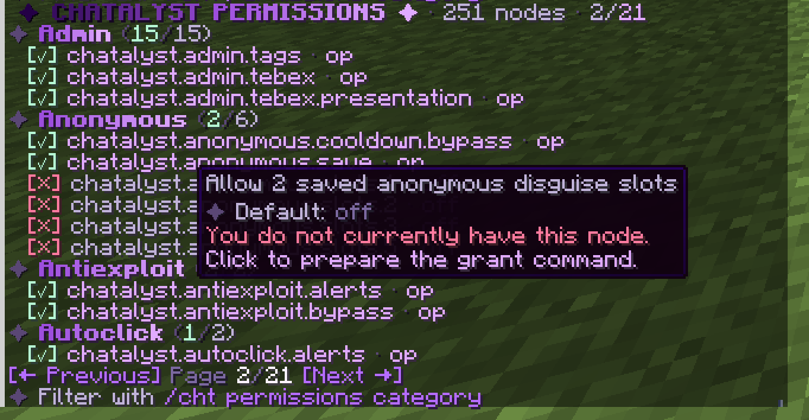

This list is built automatically from the plugin. everyone means all players have it by default, op means only operators, nobody means you must grant it. Give nodes with your permissions plugin, for example /lp group default permission set chatalyst.command.msg true. In game, /cht permissions shows the same list and which nodes you have. Click a node to place the grant command in your chat (Permissions_List.Grant_Command in config.yml).

| Permission | Default | What it unlocks |
|---|---|---|
chatalyst.admin | op | Access to administrative commands |
chatalyst.fancyjoin.owner | nobody | Owner-tier fancy entrance on join |
chatalyst.fancyjoin.admin | nobody | Admin-tier fancy entrance on join |
chatalyst.fancyjoin.vip | nobody | VIP-tier fancy entrance on join |
chatalyst.book.admin | op | Create, edit, save, delete and open configured books for players |
chatalyst.admin.network | op | Access to all network administration features |
chatalyst.admin.network.monitor | op | View chat timelines from every backend in the admin GUI |
chatalyst.admin.network.monitor.server.* | op | View and subscribe to every backend chat stream |
chatalyst.admin.network.monitor.channel.* | op | View every channel inside permitted backend streams |
chatalyst.admin.network.announce | op | Send /announce compositions to every backend through the proxy |
chatalyst.admin.staff.directory | op | View the live network staff directory in the admin GUI |
chatalyst.admin.staff.teleport | op | Teleport to staff across servers from the admin GUI |
chatalyst.admin.players | op | Access all network player directory features |
chatalyst.admin.players.directory | op | Browse online players grouped by proxy backend |
chatalyst.admin.players.teleport | op | Teleport to players locally or through the native proxy bridge |
chatalyst.admin.players.server.* | op | View players from every backend in the network directory |
chatalyst.staff.mentionable | nobody | Marks a LuckPerms group as mentionable for staff escalation |
chatalyst.support.staff | op | Receive, answer and close private support requests |
chatalyst.support.tier.helper | nobody | Receive support requests during the helper priority stage |
chatalyst.support.tier.mod | nobody | Receive support requests during the moderator priority stage |
chatalyst.support.tier.admin | nobody | Receive support requests during the administrator priority stage |
chatalyst.support.tier.owner | nobody | Receive support requests during the owner priority stage |
chatalyst.chat.color | op | Use colors/MiniMessage in chat |
chatalyst.chat.color.others | op | Change another player's chat color (/chatcolor ) |
chatalyst.chat.links | op | Make URLs you type in chat clickable |
chatalyst.chat.item | everyone | Show the held item in chat by typing [item] |
chatalyst.chat.pixel | everyone | Use pixel-style chat tokens such as [creeper] and :heart: |
chatalyst.chat.emoji | everyone | Use :name: emojis in chat |
chatalyst.deletemessages | op | See and use the delete-message button in chat |
chatalyst.channel.staff | op | Access to the staff channel |
chatalyst.channel.send | op | Send to a channel without joining it (/channel send) |
chatalyst.channel.sendas | op | Send to a channel impersonating a player (/channel sendas) |
chatalyst.channel.seeall | nobody | With Channels.Exclusive on, still receive every channel (moderation) |
chatalyst.spy | op | Spy on everything (umbrella) and toggle /spy |
chatalyst.spy.pm | nobody | Spy on private messages only |
chatalyst.spy.command | nobody | Spy on commands only |
chatalyst.spy.sign | nobody | Spy on signs only |
chatalyst.spy.book | nobody | Spy on books only |
chatalyst.spy.anvil | nobody | Spy on anvil renames only |
chatalyst.spy.channel | op | See party and clan channel messages while spy is on |
chatalyst.discord.mention | nobody | Notify Discord members by writing @name in game |
chatalyst.spy.container | nobody | Spy on container and mechanism interactions only (with coordinates) |
chatalyst.spy.combat | nobody | See a live line when a PvP fight opens and when someone is killed |
chatalyst.command.containerlog | op | Review container and mechanism logs with /containerlog |
chatalyst.containerlog.teleport | op | Use the [Go]/[TP] teleport buttons in container logs and container spy |
chatalyst.containerlog.peek | op | Use the [View] button to open a container's contents from the log or spy |
chatalyst.containerlog.exempt | nobody | Container and mechanism interactions of this player are never logged |
chatalyst.command.combatlog | op | Review PvP logs with /combatlog, including who started each fight |
chatalyst.combatlog.teleport | op | Use the [Go]/[TP] teleport buttons in combat logs |
chatalyst.combatlog.exempt | nobody | This player's hits are never logged (staff duels, testing) |
chatalyst.chat.shareinv | everyone | Share a read-only inventory or ender chest view in chat with [inv] / [ec] |
chatalyst.command.anonymous | op | Toggle streamer anonymous mode with /anonymous |
chatalyst.anonymous.save | op | Save and reuse anonymous disguises (/anon save, set, list, delete) |
chatalyst.anonymous.slots.1 | nobody | Allow 1 saved anonymous disguise slot |
chatalyst.anonymous.slots.2 | nobody | Allow 2 saved anonymous disguise slots |
chatalyst.anonymous.slots.3 | nobody | Allow 3 saved anonymous disguise slots (e.g. top VIP / MVP++) |
chatalyst.anonymous.slots.5 | nobody | Allow 5 saved anonymous disguise slots |
chatalyst.anonymous.cooldown.bypass | op | Change anonymous disguise without waiting for Switch_Cooldown_Seconds |
chatalyst.command.marry | everyone | Use /marry and /divorce (the feature itself is opt-in in players.yml) |
chatalyst.spy.autoenable | nobody | Spy mode starts on when you join (turning it off with /spy is remembered) |
chatalyst.seevanished | op | See vanished players in lists and tab-completion |
chatalyst.notify.rules | op | Get notified when someone breaks a rule |
chatalyst.notify.security | op | Get alerted about chat filter-evasion attempts |
chatalyst.bypass.ads | op | Bypass anti-advertising rules |
chatalyst.bypass.spam | op | Bypass anti-spam rules |
chatalyst.bypass.mailcooldown | op | Bypass the mail send cooldown |
chatalyst.bypass.caps | op | Bypass anti-caps |
chatalyst.bypass.swear | op | Bypass the swear filter |
chatalyst.bypass.antibot | op | Bypass the anti-bot join delay |
chatalyst.bypass.cooldown | op | Bypass command cooldowns |
chatalyst.bypass.autoresponse | nobody | Your chat never triggers the auto-response bot |
chatalyst.bypass.security | nobody | Bypass chat security sanitizing |
chatalyst.bypass.blocker | op | Bypass the command blocker |
chatalyst.bypass.nicktab | op | See real names instead of nicks in tab-complete suggestions |
chatalyst.bypass.reach | op | Message players who ignore you, have PMs off, or are vanished |
chatalyst.bypass.range | op | Hear every local frequency, not just your tuned one (staff) |
chatalyst.bypass.tabcomplete | op | See every command in tab completion (bypass the hide list) |
chatalyst.bypass.router | op | Your messages are never auto-routed out of global chat |
chatalyst.report.bypass | op | Bypass the /report cooldown |
chatalyst.command.mute | op | Use /mute and /unmute |
chatalyst.command.itemwatch | op | Use /itemwatch to scan a player's items (inventory, ender chest, vaults) |
chatalyst.itemwatch.alerts | op | Receive suspicious-item alerts (absurd amounts, fast gains, illegal stacks) |
chatalyst.itemwatch.bypass | nobody | This player's items are never watched (event hosts, builders) |
chatalyst.command.autoclick | op | Use /autoclick (/cps) to watch a player's clicks live and list recent suspects |
chatalyst.autoclick.alerts | op | Receive autoclick alerts (machine-regular clicks, impossible sustained CPS) |
chatalyst.autoclick.bypass | nobody | This player's clicks are never analysed (testers, accessibility tools) |
chatalyst.command.antiexploit | op | Use /antiexploit to list recent exploit suspects, see what is active and toggle alerts |
chatalyst.antiexploit.alerts | op | Receive anti-exploit alerts (packet floods, oversized items or signs, channel spam, kicks) |
chatalyst.antiexploit.bypass | op | Never checked by the anti-exploit (operators building in creative with big shulkers, testers) |
chatalyst.command.itemaudit | op | Use /itemaudit to read the staff item and gamemode record (not part of chatalyst.staff.*) |
chatalyst.itemaudit.alerts | op | Receive live alerts when staff take items out of nowhere, hand them out or change gamemode |
chatalyst.itemaudit.bypass | nobody | This player's items and gamemode changes are never audited (meant for the owner only) |
chatalyst.gamemode.survival | everyone | May stay in survival while Staff_Item_Audit.Gamemode.Restrict is on |
chatalyst.gamemode.adventure | everyone | May stay in adventure while Staff_Item_Audit.Gamemode.Restrict is on |
chatalyst.gamemode.creative | op | May stay in creative while Staff_Item_Audit.Gamemode.Restrict is on |
chatalyst.gamemode.spectator | op | May stay in spectator while Staff_Item_Audit.Gamemode.Restrict is on |
chatalyst.staff.* | op | Complete Chatalyst staff operations suite |
chatalyst.command.staff | op | Use /staff, its dashboard and staff mode inventory |
chatalyst.command.kick | op | Use Chatalyst's fancy /kick |
chatalyst.command.warn | op | Use /warn to warn a player (adds warning points) |
chatalyst.command.dupeip | op | Use /dupeip: every account that joined from the same connections |
chatalyst.command.ipreport | op | Use /ipreport: online players sharing a connection |
chatalyst.command.iphistory | op | Use /iphistory: connections used by an account |
chatalyst.command.namehistory | op | Use /namehistory |
chatalyst.command.lastuuid | op | Use /lastuuid |
chatalyst.command.checkban | op | Use /checkban |
chatalyst.command.checkmute | op | Use /checkmute |
chatalyst.command.checkwarn | op | Use /checkwarn |
chatalyst.command.banlist | op | Use /banlist |
chatalyst.command.mutelist | op | Use /mutelist |
chatalyst.command.warnlist | op | Use /warnlist |
chatalyst.command.ipmute | op | Use /ipmute and /unipmute |
chatalyst.command.unwarn | op | Use /unwarn |
chatalyst.command.history | op | Use /history in chat |
chatalyst.command.staffhistory | op | Use /staffhistory |
chatalyst.command.staffrollback | op | Use /staffrollback (undo another staff member's punishments) |
chatalyst.command.prunehistory | op | Use /prunehistory (delete punishment history) |
chatalyst.command.lockdown | op | Use /lockdown |
chatalyst.vanish.bypass | nobody | In vanish or staff mode, act normally: break/place blocks, open real containers, move/drop/pick up items (staff kit stays protected) |
chatalyst.command.banstyle | op | Use /banstyle (design, sound, title and animation of ban announcements) |
chatalyst.staff.ip | op | See real IP addresses in /dupeip, /iphistory and /ipreport, and search by IP |
chatalyst.lockdown.bypass | op | Join the network while a /lockdown is active |
chatalyst.notify.silent | op | See silent (-s) punishment announcements |
chatalyst.command.ban | op | Use /ban, /tempban and /unban |
chatalyst.command.banip | op | Use /banip and /unbanip (account + connection bans) |
chatalyst.command.freeze | op | Use /freeze and /unfreeze |
chatalyst.command.vanish | op | Toggle personal staff vanish |
chatalyst.command.vanish.others | op | Change another staff member's vanish state |
chatalyst.command.invsee | op | Review a player's inventory with /invsee |
chatalyst.command.invsee.edit | op | Edit a player's inventory live (grant per rank in LuckPerms) |
chatalyst.command.echest | op | Review a player's ender chest with /echest |
chatalyst.command.clearinventory | op | Clear a player's inventory, equipped armor and off hand with /clearinventory |
chatalyst.command.echest.edit | op | Edit a player's ender chest live (grant per rank in LuckPerms) |
chatalyst.command.seen | op | Check when a player was last seen with /seen |
chatalyst.command.check | op | See a player's punishment summary with /check |
chatalyst.command.tp | op | Use the staff teleports /tpto and /tphere |
chatalyst.command.vaultsee | op | /vaultsee - review any player's PlayerVaultsX vaults read-only, online or offline |
chatalyst.command.vaultsee.edit | op | Open the real PlayerVaultsX vault of another player to edit it (from /vaultsee) |
chatalyst.command.chestview | op | /chestview - look inside any container (claims included) read-only, nothing can be taken out |
chatalyst.staff.teleport | op | Teleport to a player from the staff GUI |
chatalyst.staff.alts | op | See possible alternate accounts in /check (hashed-connection matches) |
chatalyst.staff.notes | op | Read, add and delete staff notes about players (/note and the menus) |
chatalyst.moderation.format | op | Use legacy colors, gradients, rainbow and Fancy Sign styles in reasons |
chatalyst.command.players | everyone | Open the player list GUI (message, ignore, mail, trade; staff also moderate) |
chatalyst.bypass.mute | op | Cannot be muted |
chatalyst.bypass.kick | op | Cannot be kicked by non-operator staff |
chatalyst.bypass.warn | op | Cannot be warned by non-operator staff |
chatalyst.bypass.ban | op | Cannot be banned by non-operator staff |
chatalyst.bypass.freeze | op | Cannot be frozen by non-operator staff |
chatalyst.bypass.clearinventory | op | Cannot have their inventory cleared by non-operator staff |
chatalyst.bypass.invsee.edit | op | Inventory and ender chest cannot be edited by non-operator staff (still viewable) |
chatalyst.command.sendformat | op | Send a chat format to one player, also on other servers |
chatalyst.command.channel | everyone | Use /channel |
chatalyst.command.frequency | everyone | Tune the local radio-chat frequency with /frequency |
chatalyst.command.msg | everyone | Use /msg and /reply |
chatalyst.command.ignore | everyone | Use /ignore |
chatalyst.command.profile | everyone | Use /perfil (/profile) |
chatalyst.command.toggle | everyone | Use /toggle |
chatalyst.command.mail | everyone | Use /mail |
chatalyst.command.report | everyone | Use /report |
chatalyst.command.discord | everyone | Link and inspect your own Discord account |
chatalyst.discord.exempt | op | Skip mandatory Discord account linking on join |
chatalyst.command.store | everyone | See and claim your own store purchases |
chatalyst.admin.store | op | Execute store delivery commands when Console_Only is disabled |
chatalyst.sign.shop | op | Create a clickable shop entrance sign |
chatalyst.command.ranks | everyone | Browse the configured Tebex rank shop with /cht ranks |
chatalyst.admin.tebex | op | Execute Tebex rank-delivery commands when Console_Only is disabled |
chatalyst.admin.tebex.presentation | op | Edit and preview global or per-rank Tebex purchase presentations |
chatalyst.command.ticket | everyone | Follow up on your own report with /ticket |
chatalyst.command.afk | everyone | Toggle AFK status with /afk |
chatalyst.command.baltop | everyone | View the money ranking with /baltop |
chatalyst.command.market | everyone | Use the built-in marketplace (/market) |
chatalyst.command.trade | everyone | Use direct player-to-player trade (/trade) |
chatalyst.market.bypasslimit | op | No limit of active market listings |
chatalyst.market.manage | op | Cancel any player's market listing (staff) |
chatalyst.market.reconcile | op | Settle interrupted market/trade payments by hand (/market credits, /market settlements, /trade settlements) |
chatalyst.market.highlight.vip | nobody | Highlight your market listings' product name (VIP color) |
chatalyst.market.highlight.mvp | nobody | Highlight your market listings' product name (MVP color) |
chatalyst.report.receive | op | Receive player reports |
chatalyst.report.manage | op | List, claim and resolve reports (/reports) |
chatalyst.report.priority | op | See and handle priority (critical) reports — high rank only |
chatalyst.command.me | everyone | Use /me |
chatalyst.command.motd | everyone | Re-show the join MOTD with /motd |
chatalyst.command.say | op | Use /say |
chatalyst.command.broadcast | op | Use /broadcast in every display (umbrella) |
chatalyst.command.broadcast.chat | nobody | Broadcast to chat only |
chatalyst.command.broadcast.title | nobody | Broadcast as a title |
chatalyst.command.broadcast.actionbar | nobody | Broadcast to the action bar |
chatalyst.command.broadcast.bossbar | nobody | Broadcast as a boss bar |
chatalyst.command.broadcast.toast | nobody | Broadcast as an advancement toast |
chatalyst.command.announce | op | Open the announcement composer GUI (/announce) |
chatalyst.tag | op | Set a personal prefix/suffix with /tag (rank perk) |
chatalyst.tag.color | op | Use colors (MiniMessage) in the /tag prefix/suffix |
chatalyst.tag.others | op | Change other players' /tag prefix/suffix |
chatalyst.tag.admin | op | Create, edit, delete and grant catalog titles through the admin GUI |
chatalyst.admin.tags | op | Change title counters with /tagcontador (console, events and other plugins) |
chatalyst.nametagtitle | op | Set your floating nametag title / side icons (rank perk) |
chatalyst.nametagtitle.color | op | Use colors (MiniMessage) and ItemsAdder icons in the nametag title |
chatalyst.nametagtitle.others | op | Change other players' nametag title / icons |
chatalyst.nametag.seeself | op | See your OWN fancy nametag/gametag floating above your head (best in F5); for testing |
chatalyst.sign.* | op | Use every Fancy Sign color, gradient, rainbow and named style |
chatalyst.sign.colors | nobody | Use all colors, gradients, rainbow and configured Fancy Sign styles |
chatalyst.nick | op | Set a nickname with /nick |
chatalyst.nick.color | op | Use colors (MiniMessage) in the nickname |
chatalyst.nick.color.others | op | Colour another player's nick (/nickcolor ) |
chatalyst.nick.others | op | Change other players' nicknames |
chatalyst.nick.impersonate | op | Allowed to use a nickname matching another player's name |
chatalyst.command.realname | op | Use /realname |
chatalyst.command.itemname | op | Rename the held item with /itemname (rank perk) |
chatalyst.bypass.itemname | op | No usage limit on /itemname |
chatalyst.command.chatcolor | everyone | Open the chat color menu |
chatalyst.chat.style.* | op | Use every chat style from /chatcolor |
chatalyst.chat.style.bold | everyone | Use bold chat style |
chatalyst.chat.style.italic | everyone | Use italic chat style |
chatalyst.chat.style.underlined | everyone | Use underlined chat style |
chatalyst.chat.style.strikethrough | everyone | Use strikethrough chat style |
chatalyst.chat.style.obfuscated | op | Use magic/obfuscated chat style |
chatalyst.nick.style.* | op | Use every nick style from /nickcolor |
chatalyst.nick.style.bold | op | Use bold nick style |
chatalyst.nick.style.italic | op | Use italic nick style |
chatalyst.nick.style.underlined | op | Use underlined nick style |
chatalyst.nick.style.strikethrough | op | Use strikethrough nick style |
chatalyst.nick.style.obfuscated | op | Use magic/obfuscated nick style |
chatalyst.command.editor | op | Use the GUI format editor |
chatalyst.command.book | everyone | Open server books |
chatalyst.color.* | op | Use all chat colors |
chatalyst.gradient.* | op | Use all chat gradients |
chatalyst.gradient.custom | op | Build your own 2-colour gradient from the nick colour GUI |
chatalyst.command.clearchat | op | Use /clearchat |
chatalyst.command.clearchat.bypass | nobody | Keep your chat when someone clears it (review what was said) |
chatalyst.command.chatlock | op | Use /chatlock and /chatunlock |
chatalyst.command.slowmode | op | Use /slowmode |
chatalyst.command.warnings | op | View and manage warning points |
chatalyst.command.log | op | Review recent chat history with /chatlog |
chatalyst.command.events | everyone | See upcoming server events with /events |
chatalyst.command.events.admin | op | Create and manage scheduled events (/events admin) |
chatalyst.command.lock | everyone | Manage the lock of the chest you look at (/candado) |
chatalyst.lock.bypass | op | Open, break and change any chest lock |
chatalyst.command.trivia | everyone | See the chat quiz question in play (/trivia) |
chatalyst.command.trivia.admin | op | Launch or skip chat quiz questions (/trivia iniciar, /trivia saltar) |
chatalyst.command.gift | everyone | See the gift boxes and what they can contain (/caja) |
chatalyst.command.gift.admin | op | Hand out and export gift boxes (/caja dar, /caja exportar) |
chatalyst.command.giveaway | everyone | See and watch server giveaways (/sorteo) |
chatalyst.command.giveaway.admin | op | Start, cancel and configure giveaways (/sorteo start) |
chatalyst.giveaway.exempt | nobody | Never entered into a giveaway draw (staff accounts) |
chatalyst.command.hologram | op | Create and edit floating holograms (/cartel, /holo) |
chatalyst.hologram.action | op | Give a hologram a click action (player command or message) |
chatalyst.hologram.action.console | op | Give a hologram a click action that runs a CONSOLE command |
chatalyst.hologram.cooldown.bypass | nobody | Click holograms without waiting for their cooldown |
chatalyst.hologram.image.url | op | Use https:// images in holograms and map murals (/cartel imagen, /cartel mural) |
chatalyst.chat.bypass | op | Chat even when the chat is locked or in slow mode |